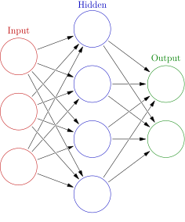

Travaux pratiques 1
Contents
Travaux pratiques 1#
Année: 2022-2023
Objectifs#
Rappels sur numpy, scikit-learn etc.
Implémentation de perceptron en Python
Introduction à Tensorflow 2.0+
Exercice 1.1 [★]#
Votre premier exercice consiste à télécharger le notebook Python Jupyter et à vous familiariser avec les différentes méthodes des bibliothèques: numpy, scikit-learn etc.
Exercice 1.2 [★★]#
Implémenter perceptron en Python avec les caractéristiques suivantes
Fonction d’activation configurable
Nombre d’entrées configurables
Nombre d’époques et taux de formation configurables
Effectuer des prévisions
Tester votre modèle avec des fonctions simple.
Exercice 1.3 [★★★]#
Mettez à jour tensorflow avec la dernière version.
!pip install tensorflow --upgrade
Voir la version installée sur votre machine
import tensorflow as tf
print(tf.__version__)
Par exemple, vous pouvez voir la valeur suivante (2.0+)
2.3.1

Afin de créer le modèle de réseau neuronal ci-dessus, vous pouvez tester le code suivant.
from tensorflow.keras.models import Sequential
from tensorflow.keras.layers import Conv2D
from tensorflow.keras.layers import MaxPool2D
from tensorflow.keras.layers import Flatten
from tensorflow.keras.layers import Dense
# Creating a sequential model
model = Sequential()
model.add(Dense(4, activation='relu', input_shape=(3,)))
model.add(Dense(units=2, activation='softmax'))
# compiling the model
model.compile(loss='mse', optimizer='sgd', metrics=['accuracy'])
Dans le modèle ci-dessus, nous utilisons l’optimiseur de descente de gradient stochastique et l’erreur quadratique moyenne comme calculateur de perte.
Dans le code ci-dessous, nous utilisons un optimiseur SGD utilisant un taux d’apprentissage de 0,01.
from tensorflow.keras.models import Sequential
from tensorflow.keras.layers import Conv2D
from tensorflow.keras.layers import MaxPool2D
from tensorflow.keras.layers import Flatten
from tensorflow.keras.layers import Dense
from tensorflow.keras.optimizers import SGD
# Creating a sequential model
model = Sequential()
model.add(Dense(4, activation='relu', input_shape=(3,)))
model.add(Dense(units=2, activation='softmax'))
# compiling the model
sgd = SGD(lr=0.01)
model.compile(loss='mean_squared_error', optimizer=sgd,metrics=['accuracy'])
Observez les différentes couches. Choisissez un ensemble de données de Tensorflow : https://www.tensorflow.org/datasets/catalog/overview et construisez un modèle pour votre hypothèse. Vous pouvez également utiliser les modèles existants.
Exercice 1.4 [★★★]#
Créer un modèle de réseau de neurones en utilisant Tensorflow. Votre objectif est de configurer les différents paramètres de votre modèle et tester le modèle avec l’ensemble de données d’écriture manuscrite du MNIST.
Le nombre de couches cachées
La configuration des couches cachées comme la fonction d’activation
Le taux d’abandon de votre modèle
Algorithmes d’optimisation
Fonctions de perte
Évaluez votre modèle en utilisant les différents indicateurs disponibles (précision etc.)